kb code graph
On this page
Recommendation: Keep as a focused component or migration source for Cairn.
On a small screen, swipe horizontally to read every column.
| Snapshot | Assessment |
|---|---|
| Supplied location ID | kb |
| Product family | Agent memory |
| Implementation stage | Small working implementation |
| Review date | 2026-09-26 |
| Local state | local changes present |
Vision and the problem it addresses
Build a living file graph after commits using structural extraction, co-change and short Claude-generated descriptions.
Who needs it: Developers onboarding to an unfamiliar repository; maintainers exploring cross-file relationships.
The moment it becomes useful: File trees show containment but not the imports, co-change patterns and rationale needed to safely change a system.
How it works

This diagram summarizes the inspected design. It is not evidence of a successful end-to-end deployment. For a hands-on journey, use the onboarding guide.
How well it addresses the problem
- The design separates extracted imports from inferred co-change; the graph makes uncertainty inspectable.
- Stat/hash caching reduces repeated analysis; descriptions are updated with diffs and previous context.
- The CLI makes hook ingestion best-effort so a graph failure does not automatically fail the user’s commit.
These are implementation strengths. Repeated use, customer demand and measured business outcomes remain separate questions.
What is missing or unproven
- newIngestCmd logs configuration errors and returns success. That protects commits, but users need a visible health signal to detect stale graphs.
- Claude-backed descriptions can incur quota and summarize incorrectly. Static structure and narrated meaning must remain separable.
- Cairn covers this need plus specs, history and sessions; selling both to the same user without boundaries duplicates onboarding.
- No runtime benchmark or graph accuracy audit was completed here.
Smallest useful next step
Expose freshness, last failed ingest and description cost prominently. Choose whether kb remains a minimal CLI or is maintained as a Cairn import/export adapter.
Acceptance exercise: In a disposable repo, change one import and commit; verify only changed files are reindexed, the edge updates and a failed Claude call appears as degraded status. Trace an extracted edge back to source.
This is a proposed validation exercise unless explicitly recorded as executed in VALIDATION.
Position in the portfolio
Related work: Cairn, Spreix Brain.
Read the overlap and integration decisions before merging features. Shared vocabulary does not guarantee shared IDs, permissions, storage or lifecycle semantics.
On a small screen, swipe horizontally to read every column.
| Reviewer judgment, 1–5 | Score |
|---|---|
| Effort to a credible narrow pilot | 2 |
| Potential breadth and recurrence of the need | 2 |
| Integration, operational and consequence exposure | 2 |
These are ordinal planning judgments, not completion percentages or a commercial valuation. Empty/archive projects should be parked rather than treated as active bets.
Evidence and next reading
Source references and snapshot limits · Developer / Claude onboarding · Portfolio synthesis